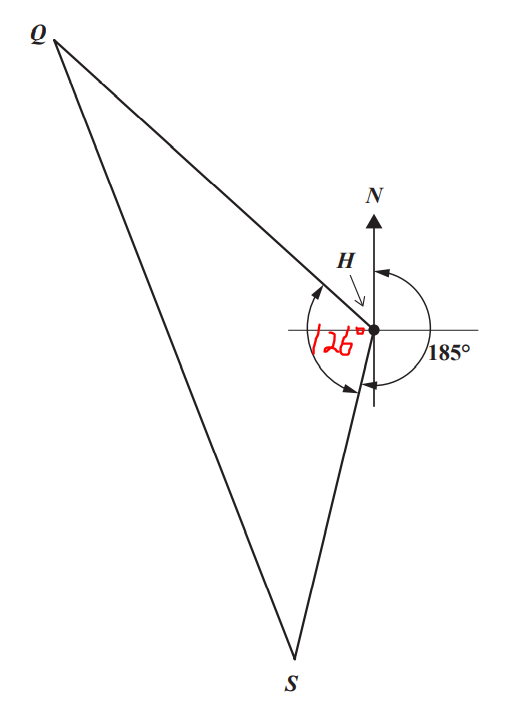
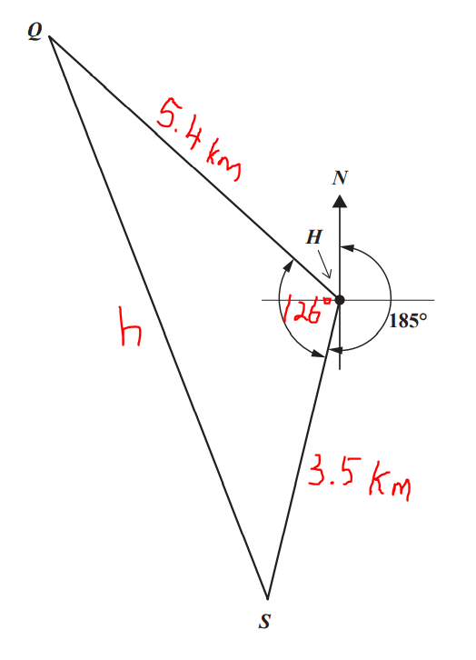
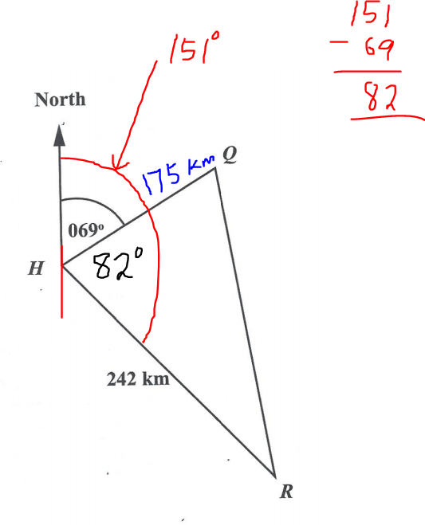
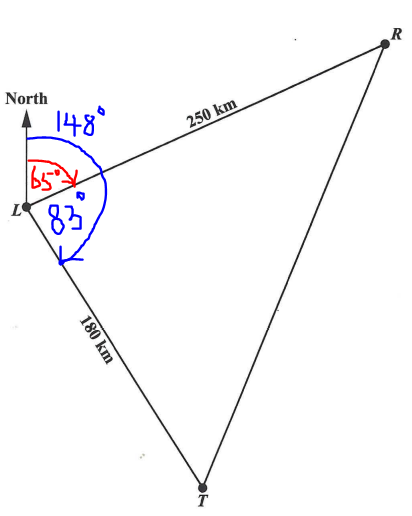
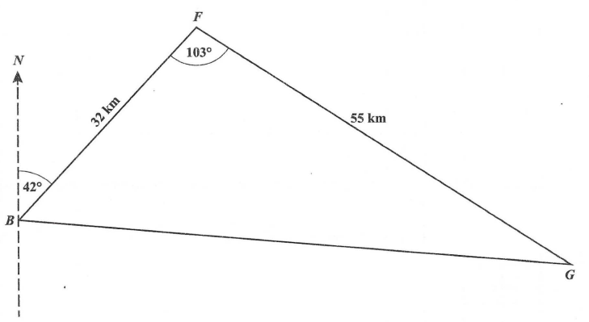
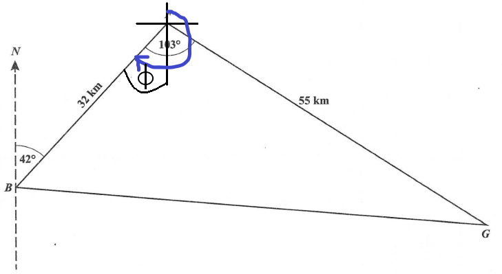
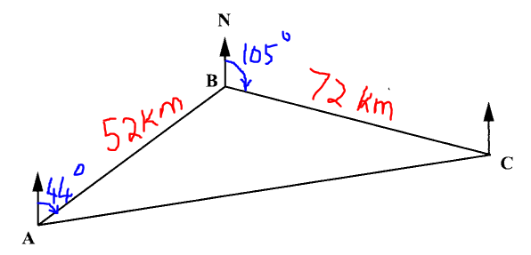
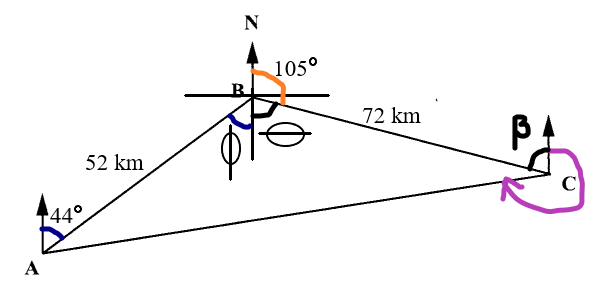

Trigonometry
Welcome to Our Site
I greet you this day,
These are the solutions to the CSEC past questions on the topics in Trigonometry.
When applicable, the TI-84 Plus CE calculator (also applicable to TI-84 Plus calculator) solutions are provided
for some questions.
The link to the video solutions will be provided for you. Please
subscribe to the YouTube channel to be notified of upcoming livestreams. You are welcome to ask questions during
the video livestreams.
If you find these resources valuable and if of these resources were helpful in your passing the
Mathematics test of the ACT, please consider making a donation:
Cash App: $ExamsSuccess or
cash.app/ExamsSuccess
PayPal: @ExamsSuccess or
PayPal.me/ExamsSuccess
Your donation is appreciated.
Comments, ideas, areas of improvement, questions, and constructive
criticisms are welcome.
Feel free to contact me. Please be positive in your message.
I wish you the best.
Thank you.
Please NOTE: For applicable questions (questions that require the angle in degrees), if you intend to
use the TI-84 Family:
Please make sure you set the MODE to DEGREE.
It is RADIAN by default. So, it needs to be set to DEGREE.

Formula Sheet: List of Formulae
Coterminal Angles
Coterminal angles are angles with the same initial side and the same terminal side.
The concept of coterminal angles helps us to find the equivalent positive angle of a negative angle.
Because an angle in standard position is measured counterclockwise, adding 360° to it accounts for a full
revolution, keeping the direction intact.
Hence for any angle say θ, the coterminal angles are θ + 360k where k is any integer.
Trigonometric Functions
Right Triangle Trigonometry for any angle, say $\theta$
Pneumonic for it is: SOHCAHTOA and cosecHOsecHAcotanAO
$
(1.)\;\; \sin \theta = \dfrac{opp}{hyp} \\[7ex]
(2.)\;\; \cos \theta = \dfrac{adj}{hyp} \\[7ex]
(3.)\;\; \tan \theta = \dfrac{\sin \theta}{\cos \theta} \\[5ex]
= \sin \theta \div \cos \theta \\[3ex]
= \dfrac{opp}{hyp} \div \dfrac{adj}{hyp} \\[5ex]
= \dfrac{opp}{hyp} * \dfrac{hyp}{adj} \\[5ex]
\therefore \tan \theta = \dfrac{opp}{adj} \\[7ex]
(4.)\;\; \csc \theta = \dfrac{1}{\sin \theta} \\[5ex]
= 1 \div \sin \theta \\[3ex]
= 1 \div \dfrac{opp}{hyp} \\[5ex]
\therefore \csc \theta = \dfrac{hyp}{opp} \\[7ex]
(5.)\;\; \sec \theta = \dfrac{1}{\cos \theta} \\[5ex]
= 1 \div \cos \theta \\[3ex]
= 1 \div \dfrac{adj}{hyp} \\[5ex]
\therefore \sec \theta = \dfrac{hyp}{adj} \\[7ex]
(6.)\;\; \cot \theta = \dfrac{1}{\tan \theta} = \dfrac{\cos \theta}{\sin \theta} \\[5ex]
= \cos \theta \div \sin \theta \\[3ex]
= \dfrac{adj}{hyp} \div \dfrac{opp}{hyp} \\[5ex]
= \dfrac{adj}{hyp} * \dfrac{hyp}{opp} \\[5ex]
\therefore \cot \theta = \dfrac{adj}{opp}
$
Summary: The Unit Circle
| $\theta$ in DEG | $\theta$ in RAD | $\sin \theta$ | $\cos \theta$ | $\tan \theta$ | $\csc \theta$ | $\sec \theta$ | $\cot \theta$ |
|---|---|---|---|---|---|---|---|
| $0$ | $0$ | $0$ | $1$ | $0$ | $undefined$ | $1$ | $undefined$ |
| $30$ | $\dfrac{\pi}{6}$ | $\dfrac{1}{2}$ | $\dfrac{\sqrt{3}}{2}$ | $\dfrac{\sqrt{3}}{3}$ | $2$ | $\dfrac{2\sqrt{3}}{3}$ | $\sqrt{3}$ |
| $45$ | $\dfrac{\pi}{4}$ | $\dfrac{\sqrt{2}}{2}$ | $\dfrac{\sqrt{2}}{2}$ | $1$ | $\sqrt{2}$ | $\sqrt{2}$ | $1$ |
| $60$ | $\dfrac{\pi}{3}$ | $\dfrac{\sqrt{3}}{2}$ | $\dfrac{1}{2}$ | $\sqrt{3}$ | $\dfrac{2\sqrt{3}}{3}$ | $2$ | $\dfrac{\sqrt{3}}{3}$ |
| $90$ | $\dfrac{\pi}{2}$ | $1$ | $0$ | $undefined$ | $1$ | $undefined$ | $0$ |
| $120$ | $\dfrac{2\pi}{3}$ | $\dfrac{\sqrt{3}}{2}$ | $-\dfrac{1}{2}$ | $-\sqrt{3}$ | $\dfrac{2\sqrt{3}}{3}$ | $-2$ | $-\dfrac{\sqrt{3}}{3}$ |
| $135$ | $\dfrac{3\pi}{4}$ | $\dfrac{\sqrt{2}}{2}$ | $-\dfrac{\sqrt{2}}{2}$ | $-1$ | $\sqrt{2}$ | $-\sqrt{2}$ | $-1$ |
| $150$ | $\dfrac{5\pi}{6}$ | $\dfrac{1}{2}$ | $-\dfrac{\sqrt{3}}{2}$ | $-\dfrac{\sqrt{3}}{3}$ | $2$ | $-\dfrac{2\sqrt{3}}{3}$ | $-\sqrt{3}$ |
| $180$ | $\pi$ | $0$ | $-1$ | $0$ | $undefined$ | $-1$ | $undefined$ |
| $210$ | $\dfrac{7\pi}{6}$ | $-\dfrac{1}{2}$ | $-\dfrac{\sqrt{3}}{2}$ | $\dfrac{\sqrt{3}}{3}$ | $-2$ | $-\dfrac{2\sqrt{3}}{3}$ | $\sqrt{3}$ |
| $225$ | $\dfrac{5\pi}{4}$ | $-\dfrac{\sqrt{2}}{2}$ | $-\dfrac{\sqrt{2}}{2}$ | $1$ | $-\sqrt{2}$ | $-\sqrt{2}$ | $1$ |
| $240$ | $\dfrac{4\pi}{3}$ | $-\dfrac{\sqrt{3}}{2}$ | $-\dfrac{1}{2}$ | $\sqrt{3}$ | $-\dfrac{2\sqrt{3}}{3}$ | $-2$ | $\dfrac{\sqrt{3}}{3}$ |
| $270$ | $\dfrac{3\pi}{2}$ | $-1$ | $0$ | $undefined$ | $-1$ | $undefined$ | $0$ |
| $315$ | $\dfrac{7\pi}{4}$ | $-\dfrac{\sqrt{2}}{2}$ | $\dfrac{\sqrt{2}}{2}$ | $-1$ | $-\sqrt{2}$ | $\sqrt{2}$ | $-1$ |
| $300$ | $\dfrac{5\pi}{3}$ | $-\dfrac{\sqrt{3}}{2}$ | $\dfrac{1}{2}$ | $-\sqrt{3}$ | $-\dfrac{2\sqrt{3}}{3}$ | $2$ | $-\dfrac{\sqrt{3}}{3}$ |
| $330$ | $\dfrac{11\pi}{6}$ | $-\dfrac{1}{2}$ | $\dfrac{\sqrt{3}}{2}$ | $-\dfrac{\sqrt{3}}{3}$ | $-2$ | $\dfrac{2\sqrt{3}}{3}$ | $-\sqrt{3}$ |
| $360$ | $2\pi$ | $0$ | $1$ | $0$ | $undefined$ | $1$ | $undefined$ |
Trigonometric Identities
\begin{array}{c | c} II & I \\ \hline III & IV \end{array} = \begin{array}{c | c} S & A \\ \hline T & C \end{array} = \begin{array}{c | c} Sine\:\: is\:\: positive & All\:\: are\:\: positive \\ \hline Tangent\:\: is\:\: positive & Cosine\:\: is\:\: positive \end{array}
The pneumonic to remember it:
First Quadrant to Fourth Quadrant (clockwise direction): A-C-T-S (ACTS of the Apostles)
First Quadrant to Fourth Quadrant (counter-clockwise direction): A-S-T-C: ADD - SUGAR - TO - COFFEE
Fourth Quadrant to Third Quadrant (counter-clockwise direction): C-A-S-T (Simon Peter, CAST your net into the
sea.)
Second Quadrant to Third Quadrant (clockwise direction): S-A-C-T
Cofunction Identities (Identities of Complements)
First Quadrant Identities
First Quadrant: All (sine, cosine, tangent) are positive
This implies that cosecant, secant, and cotangent are also positive.
Given: two angles say: $\alpha$ and $\beta$;
If $\alpha$ and $\beta$ are complementary, then the:
Sine function and the Cosine functions are cofunctions
$
\sin \alpha = \cos \beta \\[3ex]
\cos \alpha = \sin \beta \\[3ex]
$
Tangent function and the Cotangent functions are cofunctions
$
\tan \alpha = \cot \beta \\[3ex]
\cot \alpha = \tan \beta \\[3ex]
$
Secant function and the Cosecant functions are cofunctions
$
\sec \alpha = \csc \beta \\[3ex]
\csc \alpha = \sec \beta \\[3ex]
$
Given: one angle say: $\theta$;
First Quadrant Identities or Cofunction Identities or Identities of Complements
$0 \lt \theta \lt 90 ...Angle\:\: in\:\: Degrees \\[3ex]$
Reference Angle = $\theta$ ... Angle in Degrees
$0 \lt \theta \lt \dfrac{\pi}{2} ...Angle\:\: in\:\: Radians \\[5ex]$
Reference Angle = $\theta$ ... Angle in Radians
First Quadrant: sine, cosine, tangent are positive
This implies that cosecant, secant, and cotangent are also positive
Complement of $\theta$ = $90 - \theta$ where $\theta$ is in degrees:
Complement of $\theta$ = $\dfrac{\pi}{2} - \theta$ where $\theta$ is in radians:
$
(1.)\:\: \sin \theta = \cos (90 - \theta) \\[3ex]
(2.)\:\: \sin \theta = \cos \left(\dfrac{\pi}{2} - \theta \right) \\[5ex]
(3.)\:\: \cos \theta = \sin (90 - \theta) \\[3ex]
(4.)\:\: \cos \theta = \sin \left(\dfrac{\pi}{2} - \theta \right) \\[5ex]
(5.)\:\: \tan \theta = \cot (90 - \theta) \\[3ex]
(6.)\:\: \tan \theta = \cot \left(\dfrac{\pi}{2} - \theta \right) \\[5ex]
(7.)\:\: \cot \theta = \tan (90 - \theta) \\[3ex]
(8.)\:\: \cot \theta = \tan \left(\dfrac{\pi}{2} - \theta \right) \\[5ex]
(9.)\:\: \sec \theta = \csc (90 - \theta) \\[3ex]
(10.)\:\: \sec \theta = \csc \left(\dfrac{\pi}{2} - \theta \right) \\[5ex]
(11.)\:\: \csc \theta = \sec (90 - \theta) \\[3ex]
(12.)\:\: \csc \theta = \sec \left(\dfrac{\pi}{2} - \theta \right) \\[7ex]
$
Second Quadrant Identities or Identities of Supplements
$90 \lt \theta \lt 180$ ... Angle in Degrees
Reference Angle = $180 - \theta$ ... Angle in Degrees
$\dfrac{\pi}{2} \lt \theta \lt \pi$ ... Angle in Radians
Reference Angle = $\pi - \theta$ ... Angle in Radians
Second Quadrant: sine is positive
This implies that cosecant is also positive
Symmetric across the y-axis
Given: one angle say: $\theta$;
Supplement of $\theta$ = $180 - \theta$ where $\theta$ is in degrees:
Supplement of $\theta$ = $\pi - \theta$ where $\theta$ is in radians:
$
(1.)\;\; \sin \theta = \sin (180 - \theta) \\[3ex]
(2.)\;\; \sin (180 - \theta) = \sin \theta \\[3ex]
(3.)\;\; \sin \theta = \sin (\pi - \theta) \\[3ex]
(4.)\;\; \sin (\pi - \theta) = \sin \theta \\[3ex]
(5.)\;\; \cos \theta = -\cos (180 - \theta) \\[3ex]
(6.)\;\; \cos (180 - \theta) = -\cos \theta \\[3ex]
(7.)\;\; \cos \theta = -\cos (\pi - \theta) \\[3ex]
(8.)\;\; \cos (\pi - \theta) = -\cos \theta \\[3ex]
(9.)\;\; \tan \theta = -\tan (180 - \theta) \\[3ex]
(10.)\;\; \tan (180 - \theta) = -\tan \theta \\[3ex]
(11.)\;\; \tan \theta = -\tan (\pi - \theta) \\[3ex]
(12.)\;\; \tan (\pi - \theta) = -\tan \theta \\[5ex]
$
Third Quadrant Identities
$180 \lt \theta \lt 270$ ... Angle in Degrees
Reference Angle = $\theta - 180$ ... Angle in Degrees
$\pi \lt \theta \lt \dfrac{3\pi}{2}$ ... Angle in Radians
Reference Angle = $\theta - \pi$ ... Angle in Radians
Third Quadrant: tangent is positive
This implies that cotangent is also positive
Symmetric across the origin
Given: one angle say: $\theta$;
$
(1.)\;\; \sin \theta = -\sin (\theta - 180) \\[3ex]
(2.)\;\; \sin (\theta - 180) = -\sin \theta \\[3ex]
(3.)\;\; \sin \theta = -\sin (\theta - \pi) \\[3ex]
(4.)\;\; \sin (\theta - \pi) = -\sin \theta \\[3ex]
(5.)\;\; \cos \theta = -\cos (\theta - 180) \\[3ex]
(6.)\;\; \cos (\theta - 180) = -\cos \theta \\[3ex]
(7.)\;\; \cos \theta = -\cos (\theta - \pi) \\[3ex]
(8.)\;\; \cos (\theta - \pi) = -\cos \theta \\[3ex]
(9.)\;\; \tan \theta = \tan (\theta - 180) \\[3ex]
(10.)\;\; \tan (\theta - 180) = \tan \theta \\[3ex]
(11.)\;\; \tan \theta = \tan (\theta - \pi) \\[3ex]
(12.)\;\; \tan (\theta - \pi) = \tan \theta \\[5ex]
$
But if $\theta \lt 180$, use $\theta + 180$
Fourth Quadrant Identities
$270 \lt \theta \lt 360$ ... Angle in Degrees
Reference Angle = $360 - \theta$ ... Angle in Degrees
$\dfrac{3\pi}{2} \lt \theta \lt 2\pi$ ... Angle in Radians
Reference Angle = $2\pi - \theta$ ... Angle in Radians
Fourth Quadrant: cosine is positive
This implies that secant is also positive
Symmetric across the x-axis
Given: one angle say: $\theta$;
$
(1.)\;\; \sin \theta = -\sin (360 - \theta) \\[3ex]
(2.)\;\; \sin (360 - \theta) = -\sin \theta \\[3ex]
(3.)\;\; \sin \theta = -\sin (2\pi - \theta) \\[3ex]
(4.)\;\; \sin (2\pi - \theta) = -\sin \theta \\[3ex]
(5.)\;\; \cos \theta = \cos (360 - \theta) \\[3ex]
(6.)\;\; \cos (360 - \theta) = \cos \theta \\[3ex]
(7.)\;\; \cos \theta = \cos (2\pi - \theta) \\[3ex]
(8.)\;\; \cos (2\pi - \theta) = \cos \theta \\[3ex]
(9.)\;\; \tan \theta = -\tan (360 - \theta) \\[3ex]
(10.)\;\; \tan (360 - \theta) = -\tan \theta \\[3ex]
(11.)\;\; \tan \theta = -\tan (2\pi - \theta) \\[3ex]
(12.)\;\; \tan (2\pi - \theta) = -\tan \theta \\[3ex]
$
Reciprocal Identities
$
(1.)\;\; \csc \theta = \dfrac{1}{\sin \theta} \\[3ex]
(2.)\;\; \sec \theta = \dfrac{1}{\cos \theta} \\[3ex]
(3.)\;\; \cot \theta = \dfrac{1}{\tan \theta} \\[3ex]
$
From Reciprocal Identities
$
(1.)\;\; \sin \theta = \dfrac{1}{\csc \theta} \\[3ex]
(2.)\;\; \cos \theta = \dfrac{1}{\sec \theta} \\[3ex]
(3.)\;\; \tan \theta = \dfrac{1}{\cot \theta} \\[5ex]
$
Quotient Identities
$
(1.)\;\; \tan \theta = \dfrac{\sin \theta}{\cos \theta} \\[3ex]
(2.)\;\; \cot \theta = \dfrac{\cos \theta}{\sin \theta} \\[3ex]
$
As you can see, $\cot \theta$ has two formulas
$
\cot \theta = \dfrac{1}{\tan \theta} \\[5ex]
\cot \theta = \dfrac{\cos \theta}{\sin \theta} \\[5ex]
$
Sometimes, we shall use the first one. Sometimes, we shall use the second one.
We have to use the formula that will not give us an undefined value (where the denominator is zero)
Even Identities
Recall: a function, say $f(x)$ is even if $f(-x) = f(x)$
In Trigonometry, the cosine function and the secant function are even functions.
$
(1.)\;\; \cos (-\theta) = \cos \theta \\[3ex]
(2.)\;\; \sec (-\theta) = \sec \theta \\[5ex]
$
Odd Identities
Recall: a function, say $f(x)$ is odd if $f(-x) = -f(x)$
In Trigonometry, the sine function, the cosecant function,
the tangent function, and the cotangent function are odd functions.
$
(1.)\;\; \sin (-\theta) = -\sin \theta \\[3ex]
(2.)\;\; \csc (-\theta) = -\csc \theta \\[3ex]
(3.)\;\; \tan (-\theta) = -\tan \theta \\[3ex]
(4.)\;\; \cot (-\theta) = -\cot \theta \\[5ex]
$
Pythagorean Identities
$
(1.)\;\; \sin^2 \theta + \cos^2 \theta = 1 \\[3ex]
(2.)\;\; \tan^2 \theta + 1 = \sec^2 \theta \\[3ex]
(3.)\;\; \cot^2 \theta + 1 = \csc^2 \theta \\[3ex]
$
From Pythagorean Identities
$
(1.)\;\; \sin \theta = \pm \sqrt{1 - \cos^2 \theta} \\[3ex]
(2.)\;\; \cos \theta = \pm \sqrt{1 - \sin^2 \theta} \\[3ex]
(3.)\;\; \tan \theta = \pm \sqrt{\sec^2 \theta - 1} \\[3ex]
(4.)\;\; \sec \theta = \pm \sqrt{\tan^2 \theta + 1} \\[3ex]
(5.)\;\; \cot \theta = \pm \sqrt{\csc^2 \theta - 1} \\[3ex]
(6.)\;\; \csc \theta = \pm \sqrt{\cot^2 \theta + 1}
$
Trigonometric Formulas
Sum and Difference Formulas
$
(1.)\;\; \sin (\alpha \pm \beta) = \sin \alpha \cos \beta \pm \cos \alpha \sin \beta \\[3ex]
(2.)\;\; \cos (\alpha \pm \beta) = \cos \alpha \cos \beta \mp \sin \alpha \sin \beta \\[3ex]
(3.)\;\; \tan (\alpha \pm \beta) = \dfrac{\tan \alpha \pm \tan \beta}{1 \mp \tan \alpha \tan \beta} \\[5ex]
$
Half-Angle Formulas
$
(1.)\;\; \sin \dfrac{\theta}{2} = \pm \sqrt{\dfrac{1 - \cos \theta}{2}} \\[5ex]
(2.)\;\; \cos {\theta \over 2} = \pm \sqrt{\dfrac{1 + \cos \theta}{2}} \\[5ex]
(3.)\;\; \tan {\theta \over 2} = \pm \sqrt{\dfrac{1 - \cos \theta}{1 + \cos \theta}} \\[5ex]
(4.)\;\; \tan {\theta \over 2} = \dfrac{\sin \theta}{1 + \cos \theta} \\[5ex]
(5.)\;\; \tan {\theta \over 2} = \dfrac{1 - \cos \theta}{\sin \theta} \\[5ex]
$
Formulas from Half-Angle Formulas
$
(1.)\;\; \sin^2 \dfrac{\theta}{2} = \dfrac{1 - \cos \theta}{2} \\[5ex]
(2.)\;\; \cos^2 \dfrac{\theta}{2} = \dfrac{1 + \cos \theta}{2} \\[5ex]
(3.)\;\; \tan^2 \dfrac{\theta}{2} = \dfrac{1 - \cos \theta}{1 + \cos \theta} \\[7ex]
$
Double-Angle Formulas
$
(1.)\;\; \sin (2\theta) = 2 \sin \theta \cos \theta \\[3ex]
(2.)\;\; \cos (2\theta) = \cos^2 \theta - \sin^2 \theta \\[3ex]
(3.)\;\; \cos (2\theta) = 1 - 2\sin^2 \theta \\[3ex]
(4.)\;\; \cos (2\theta) = 2\cos^2 \theta - 1 \\[3ex]
(5.)\;\; \tan (2\theta) = \dfrac{2\tan \theta}{1 - \tan^2 \theta} \\[5ex]
$
Formulas from Double-Angle Formulas
$
(1.)\;\; \sin^2 \theta = \dfrac{1 - \cos(2\theta)}{2} \\[5ex]
(2.)\;\; \cos^2 \theta = \dfrac{1 + \cos(2\theta)}{2} \\[5ex]
(3.)\;\; \tan^2 \theta = \dfrac{1 - \cos(2\theta)}{1 + \cos(2\theta)} \\[7ex]
$
Triple-Angle Formulas
$
(1.)\;\; \sin (3\theta) = 3 \sin \theta - 4\sin^3 \theta \\[3ex]
(2.)\;\; \cos (3\theta) = 4 \cos^3 \theta - 3 \cos \theta \\[3ex]
(3.)\;\; \tan (3\theta) = \dfrac{3\tan \theta - \tan^3 \theta}{1 - 3\tan^2 \theta} \\[7ex]
$
Sum-to-Product Formulas
$
(1.)\;\; \sin \alpha + \sin \beta = 2 \sin \left(\dfrac{\alpha + \beta}{2}\right) \cos \left(\dfrac{\alpha -
\beta}{2}\right) \\[5ex]
(2.)\;\; \sin \alpha - \sin \beta = 2 \sin \left(\dfrac{\alpha - \beta}{2}\right) \cos \left(\dfrac{\alpha +
\beta}{2}\right) \\[5ex]
(3.)\;\; \cos \alpha + \cos \beta = 2 \cos \left(\dfrac{\alpha + \beta}{2}\right) \cos \left(\dfrac{\alpha -
\beta}{2}\right) \\[5ex]
(4.)\;\; \cos \alpha - \cos \beta = -2 \sin \left(\dfrac{\alpha + \beta}{2}\right) \sin \left(\dfrac{\alpha -
\beta}{2}\right) \\[5ex]
$
Ask students to write the compact form / shortened form of the first two Sum-to-Product Formulas.
Sum-to-Product Formulas (Compact Form of the First Two Formulas)
$
(1.)\;\; \sin \alpha \pm \sin \beta = 2 \sin \dfrac{\alpha \pm \beta}{2} \cos \dfrac{\alpha \mp \beta}{2}
\\[7ex]
$
Product-to-Sum Formulas
$
(1.) \sin \alpha * \sin \beta = \dfrac{1}{2} [\cos(\alpha - \beta) - \cos(\alpha + \beta)] \\[5ex]
(2.) \cos \alpha * \cos \beta = \dfrac{1}{2} [\cos(\alpha - \beta) + \cos(\alpha + \beta)] \\[5ex]
(3.) \sin \alpha * \cos \beta = \dfrac{1}{2} [\sin(\alpha + \beta) + \sin(\alpha + \beta)] \\[5ex]
$
Factoring Formulas
x is any trigonometric ratio
y is any trigonometric ratio
$
\underline{Difference\;\;of\;\;Two\;\;Squares} \\[3ex]
(1.)\;\;x^2 - y^2 = (x + y)(x - y) \\[5ex]
\underline{Difference\;\;of\;\;Two\;\;Cubes} \\[3ex]
(2.)\;\; x^3 - y^3 = (x - y)(x^2 + xy + y^2) \\[5ex]
\underline{Sum\;\;of\;\;Two\;\;Cubes} \\[3ex]
(3.)\;\; x^3 + y^3 = (x + y)(x^2 - xy + y^2) \\[5ex]
$
Triangle Laws
Sine Law:
Applies to all triangles.
It states that the ratio of the side length of any triangle to the sine of the angle measure opposite that side
is the same for the three sides of the triangle.
$
\dfrac{a}{\sin A} = \dfrac{b}{\sin B} = \dfrac{c}{\sin C} \\[5ex]
$
OR
The ratio of the angle measure of any triangle to the side length opposite that angle is the same for the three
angles of the triangle.
$
\dfrac{\sin A}{a} = \dfrac{\sin B}{b} = \dfrac{\sin C}{c} \\[5ex]
$
Cosine Law:
Applies to all triangles.
It states that the square of a side of a triangle is the difference between the sum of the squares of the other
two sides and twice the product of the two sides and the included angle.
$
a^2 = b^2 + c^2 - 2bc \cos A \\[3ex]
\cos A = \dfrac{b^2 + c^2 - a^2}{2bc} \\[5ex]
\rightarrow A = \cos^{-1} \left(\dfrac{b^2 + c^2 - a^2}{2bc}\right) \\[5ex]
b^2 = a^2 + c^2 - 2ac \cos B \\[3ex]
\cos B = \dfrac{a^2 + c^2 - b^2}{2ac} \\[5ex]
\rightarrow B = \cos^{-1} \left(\dfrac{a^2 + c^2 - b^2}{2ac}\right) \\[5ex]
c^2 = a^2 + b^2 - 2ab \cos C \\[3ex]
\cos C = \dfrac{a^2 + b^2 - c^2}{2ab} \\[5ex]
\rightarrow C = \cos^{-1} \left(\dfrac{a^2 + b^2 - c^2}{2ab}\right) \\[5ex]
$
Theorems
(1.) Sum of Angles of a Triangle Theorem:
The sum of the interior angles of a triangle is 180°
(2.) In a 30° – 60° – 90° right triangle; the length of the hypotenuse
is twice the length of the short side.
(3.) In a 30° – 60° – 90° right triangle; the length of the middle side
is the square root of 3 times the length of short side.
(4.) In a 45° – 45° – 90° right triangle theorem (Right Isosceles Triangle
Theorem); the length of the hypotenuse is the square root of 2 times the length of either side.
(5.) Pythagorean Theorem: Applies only to right triangles.
In a right triangle, the square of the length of the hypotenuse is the
sum of the squares of the short side and the middle side.
$hyp^2 = leg^2 + leg^2$
(6.) Converse of the Pythagorean Theorem (Right Triangle Theorem):
If the square of the long side(hypotenuse) is the
sum of the squares of the other two sides, then the triangle is a right triangle.
(7.) Acute Triangle Theorem: If the square of the long side is less than the sum of the squares of the
other two sides, then the triangle is an acute triangle.
(8.) Obtuse Triangle Theorem: If the square of the long side is greater than the sum of the squares of
the other two sides, then the triangle is an obtuse triangle.
(9.) Triangle Inequality Theorem: This is the theorem that determines if you can form a triangle using
any three lengths.
The sum of the lengths of any two sides of a triangle is greater than the length of the third side.
(10.) Side Length – Angle Measure Theorem: If any two side lengths of a triangle are unequal; the
angles of the triangle are also unequal, and the measure of an angle is opposite the length of the side facing
that angle as regards size.
The measure of the smallest angle is opposite the shortest side length.
The measure of the greatest angle is opposite the longest side length.
The measure of the middle angle is opposite the middle side length.
In other words; regarding size, the measure of an angle is opposite the length of the side facing the
angle; or the side length facing an angle is opposite the angle measure as regards size.
Small side faces small angle, middle side faces middle angle, big side faces big angle
(11.) Exterior Angle of a Triangle Theorem: The exterior angle of a triangle is the sum of the two
interior opposite angles.
(12.) Isosceles Base Angles Theorem: The base angles of an isosceles triangle are equal.
(13.) Converse of the Isosceles Base Angles Theorem: If the base angles of a triangle are equal, then the
triangle is an isosceles triangle.
(14.) Perpendicular Bisector of the Base of an Isosceles Triangle Theorem: It states that if a line
bisects the vertex angle of an isosceles triangle, then the line is also the perpendicular
bisector of the base (the line also bisects the base of that isosceles triangle at right angles).
(15.) Perpendicular Height to Base of Isosceles Triangle Theorem It states that the perpendicular height
drawn from the apex of an isosceles triangle to the base:
(a.) bisects the base
(b.) bisects the apex angle.
(16.) Side-Splitter Theorem Applies to all triangles with inserted parallel lines as applicable.
It states that if a line segment is parallel to one side of a triangle and intersects the other two sides of
the triangle, then it divides those two sides proportionally.
(17.) Midpoint Theorem Applies to all triangles in which a line segment
joins the midpoints of any two sides of the triangle.
It states that if a line segment joins any two sides of a triangle, then the line segment:
(a.) is parallel to the third side.
(b.) bisects the third side.
(18.) Converse of the Midpoint Theorem A line segment drawn through the midpoint of one side of a
triangle and parallel to another side, bisects the third side.
(19.) Scale Factor, Perimeter Ratio, and Area Ratio of Similar Figures Theorem Applies to all similar
figures including similar triangles.
It states that for two similar figures, the ratio of the perimeters is the same as the scale factor; and the
ratio of the areas is the ratio of the square of the scale factor.
Circle Formulas
Except stated otherwise, use:
$
d = diameter \\[3ex]
r = radius \\[3ex]
L = arc\:\:length \\[3ex]
A = area\;\;of\;\;sector \\[3ex]
P = perimeter\;\;of\;\;sector \\[3ex]
\theta = central\:\:angle \\[3ex]
\pi = \dfrac{22}{7} \\[5ex]
RAD = radians \\[3ex]
^\circ = DEG = degrees \\[7ex]
\underline{\theta\;\;in\;\;DEG} \\[3ex]
L = \dfrac{2\pi r\theta}{360} \\[5ex]
\theta = \dfrac{180L}{\pi r} \\[5ex]
r = \dfrac{180L}{\pi \theta} \\[5ex]
A = \dfrac{\pi r^2\theta}{360} \\[5ex]
\theta = \dfrac{360A}{\pi r^2} \\[5ex]
r = \dfrac{360A}{\pi\theta} \\[5ex]
P = \dfrac{r(\pi\theta + 360)}{180} \\[7ex]
\underline{\theta\;\;in\;\;RAD} \\[3ex]
L = r\theta \\[5ex]
\theta = \dfrac{L}{r} \\[5ex]
r = \dfrac{L}{\theta} \\[5ex]
A = \dfrac{r^2\theta}{2} \\[5ex]
\theta = \dfrac{2A}{r^2} \\[5ex]
r = \sqrt{\dfrac{2A}{\theta}} \\[5ex]
P = r(\theta + 2) \\[7ex]
Circumference\:\:of\:\:a\:\:circle = 2\pi r = \pi d \\[3ex]
L = \dfrac{2A}{r} \\[5ex]
r = \dfrac{2A}{L} \\[5ex]
A = \dfrac{Lr}{2}
$
It then travels to Comptin (C) which is 310 km due east of Akron (A), as shown in the diagram below.

(i.) Indicate on the diagram the bearing 030° and the distances 90 km and 310 km
(ii.) Calculate, to the nearest km, the distance between Bellville (B) and Comptin (C)
(iii.) Calculate, to the nearest degree, the measure of $A\hat{B}C$
(iv.) Determine the bearing of Comptin (C) from Bellville (B)
(i.)

$ (ii.) \\[3ex] \underline{\triangle ABC} \\[3ex] B\hat{A}C + 30 = 90 ...perpendicular\;\;angle \\[3ex] B\hat{A}C = 90 - 30 = 60^\circ \\[3ex] |BC|^2 = |AB|^2 + |AC|^2 - 2(|AB|)(|AC|) \cos B\hat{A}C \\[3ex] |BC|^2 = 90^2 + 310^2 - 2(90)(310) * \cos 60 \\[3ex] |BC|^2 = 8100 + 96100 - 55800 * 0.5 \\[3ex] |BC|^2 = 104200 - 27900 \\[3ex] |BC|^2 = 76300 \\[3ex] |BC| = \sqrt{76300} \\[3ex] |BC| = 276.2245463 \\[3ex] |BC| \approx 276\;km \\[5ex] (iii.) \\[3ex] \underline{\triangle ABC} \\[3ex] \dfrac{\sin A\hat{B}C}{310} = \dfrac{\sin B\hat{A}C}{|BC|}...Sine\;\;Law \\[5ex] \dfrac{\sin A\hat{B}C}{310} = \dfrac{\sin 60}{276.2245463} \\[5ex] \sin A\hat{B}C = \dfrac{310 * \sin 60}{276.2245463} \\[5ex] \sin A\hat{B}C = \dfrac{310 * 0.8660254038}{276.2245463} \\[5ex] \sin A\hat{B}C = \dfrac{268.4678752}{276.2245463} \\[5ex] \sin A\hat{B}C = 0.9719189651 \\[3ex] A\hat{B}C = \sin^{-1}(0.9719189651) \\[3ex] A\hat{B}C = 76.38976123 \\[3ex] A\hat{B}C \approx 76^\circ \\[5ex] (iv.) \\[3ex] $

$ Bearing\;\;of\;\;Comptin\;\;from\;\;Bellville = \theta \\[3ex] \phi = 30^\circ...alternate\;\; \angle s\;\;are\;\;equal \\[3ex] \phi + \tau = A\hat{B}C ...diagram \\[3ex] 30 + \tau = 76.38976123 \\[3ex] \tau = 76.38976123 - 30 \\[3ex] \tau = 46.38976123 \\[3ex] \theta + \tau = 180...\angle s\;\;on\;\;a\;\;straight\;\;line \\[3ex] \theta = 180 - \tau \\[3ex] \theta = 180 - 46.38976123 \\[3ex] \theta = 133.6102388 \\[3ex] \theta \approx 133^\circ $
The bearing of Q from P is 133° and the angle PQR is 56°

(i) Calculate the value of angle w
(ii) Determine the bearing of P from Q
(iii) Calculate the distance RP
$ (i) \\[3ex] 56 + w = 133 ...\text{alternate interior angles are equal} \\[3ex] w = 133 - 56 \\[3ex] w = 77^\circ \\[5ex] (ii) \\[3ex] Bearing\;\;of\;\;P\;\;from\;\;Q \\[3ex] = 180 + w + 56 \\[3ex] = 180 + 133 \\[3ex] = 313^\circ \\[5ex] (iii) \\[3ex] \underline{\text{Cosine Law}} \\[3ex] |RP|^2 = 210^2 + 290^2 - 2(210)(290) \cos 56^\circ \\[4ex] |RP|^2 = 44100 + 84100 - 121800 * 0.5591929035 \\[3ex] |RP|^2 = 128200 - 68109.69564 \\[3ex] |RP|^2 = 60090.30436 \\[3ex] |RP| = \sqrt{60090.30436} \\[3ex] |RP| = 245.133238 \\[3ex] |RP| \approx 245\;km $
Q is 5.4 km from H while S is 3.5 km from H
(i) On the diagram below, which shows the sketch of this information, insert the value of the marked angle, QHS

(ii) Calculate QS, the distance between the two buoys.
(iii) Calculate the bearing of S from Q
$ (i) \\[3ex] \angle QHS = 311 - 185 = 216^\circ \\[3ex] $


$ (ii) \\[3ex] Let\;\; QS = h \\[3ex] h^2 = 5.4^2 + 3.5^2 - 2(5.4)(3.5) \cos 126^\circ...Cosine\;\;Law \\[3ex] h^2 = 29.16 + 12.25 - 37.8 * -0.5877852523 \\[3ex] h^2 = 41.41 + 22.21828254 \\[3ex] h^2 = 63.62828254 \\[3ex] h = \sqrt{63.62828254} \\[3ex] h = 7.976733826 \\[3ex] QS \approx 8.0\;km \\[3ex] $

$ k + 126 + 185 = 360...\angle s\;\;at\;\;a\;\;point \\[3ex] k + 311 = 360 \\[3ex] k = 360 - 311 \\[3ex] k = 49^\circ \\[3ex] p = p ...alternate\;\; \angle s \\[3ex] p + k = 90 ...right\;\; \angle \\[3ex] p = 90 - k \\[3ex] p = 90 - 49 \\[3ex] p = 41^\circ \\[3ex] Considering\;\; \triangle QHS \\[3ex] \dfrac{\sin \angle SQH}{3.5} = \dfrac{\sin 126}{h}...Sine\;\;Law \\[5ex] \dfrac{\sin \angle SQH}{3.5} = \dfrac{0.8090169944}{7.976733826} \\[5ex] \sin \angle SQH = \dfrac{3.5 * 0.8090169944}{7.976733826} \\[5ex] \sin \angle SQH = \dfrac{2.83155948}{7.976733826} \\[5ex] \sin \angle SQH = 0.3549773055 \\[3ex] \angle SQH = \sin^{-1}(0.3549773055) \\[3ex] \angle SQH = 20.79205349^\circ \\[5ex] (iii) \\[3ex] Bearing\;\;of\;\; S\;\;from\;\;Q \\[3ex] = 90 + p + \angle SQH \\[3ex] = 90 + 41 + 20.79205349 \\[3ex] = 151.7920535 \\[3ex] \approx 152^\circ $
The angles of depression are 20° and 12° respectively.
The ships are 110 m apart.
(i) Complete the diagram below by inserting the angles of depression and the distance between the ships.

(ii) Determine, to the nearest metre,
(a) the distance, TS2, between the top of the lighthouse and Ship 2
(b) the height of the lighthouse, TB.
(i)
The angles of depression and the distance between the ships are shown in the diagram below:

$ (ii) \\[3ex] \angle TS_1B = 20^\circ ...alternate\;\;\angle s\;\;are\;\;equal \\[3ex] \angle TS_1S_2 + \angle TS_1B = 180^\circ ...\angle s\;\;on\;\;a\;\;straight\;\;line \\[3ex] \angle TS_1S_2 + 20 = 180 \\[3ex] \angle TS_1S_2 = 180 - 20 \\[3ex] \angle TS_1S_2 = 160^\circ \\[3ex] \underline{\triangle TS_2S_1} \\[5ex] (a) \\[3ex] \dfrac{|TS_2|}{\sin\angle TS_1S_2} = \dfrac{|S_1S_2|}{\sin\angle S_1TS_2}...Sine\;\;Law \\[5ex] \dfrac{|TS_2|}{\sin 160^\circ} = \dfrac{110}{\sin 8^\circ} \\[5ex] |TS_2| = \dfrac{110\sin 160^\circ}{\sin 8^\circ} \\[5ex] |TS_2| = \dfrac{110(0.3420201433)}{0.139173101} \\[5ex] |TS_2| = 270.3267766\;m \\[3ex] |TS_2| \approx 270\;m \\[5ex] (b) \\[3ex] \angle TS_2B = 12^\circ ...alternate\;\;\angle s\;\;are\;\;equal \\[3ex] \underline{\triangle TS_2B} \\[3ex] \sin \angle TS_2B = \dfrac{|TB|}{|TS_2|}...SOHCAHTOA \\[5ex] \sin 12^\circ = \dfrac{|TB|}{270.3267766} \\[5ex] |TB| = 270.3267766\sin 12 \\[3ex] |TB| = 270.3267766(0.2079116908) \\[3ex] |TB| = 56.2040972 \\[3ex] |TB| \approx 56\;m $
The boat then changes course and travels for a distance of 8 km to point C on a bearing of 060°
(a.) Illustrate the above diagram in a clearly labelled diagram
The diagram should show the
(i.) north direction
(ii.) bearings 135° and 060°
(iii) distances 8 km and 15 km
(b.) Calculate
(i.) the distance AC
(ii.) $\angle BCA$
(iii.) the bearing of A from C
(a.)

$ (b.) \\[3ex] \theta = 45^\circ...alternate\;\;\angle s\;\;are\;\;equal \\[3ex] \theta + \phi = 90...complementary\;\;\angle s \\[3ex] \phi = 90 - \theta \\[3ex] \phi = 90 - 45 \\[3ex] \phi = 45^\circ \\[3ex] \angle ABC = B = \phi + 60...diagram \\[3ex] B = 45 + 60 \\[3ex] B = 105^\circ \\[5ex] (i.) \\[3ex] Distance\;\; AC = b \\[3ex] b^2 = a^2 + c^2 - 2ac \cos B...Cosine\;\;Law \\[3ex] b^2 = 8^2 + 15^2 - 2(8)(15) * \cos 105 \\[3ex] b^2 = 64 + 225 - 240 * - 0.2588190451 \\[3ex] b^2 = 289 + 62.11657082 \\[3ex] b^2 = 351.1165708 \\[3ex] b = \sqrt{351.1165708} \\[3ex] b = 18.73810478 \\[3ex] b \approx 19\;km \\[5ex] (ii.) \\[3ex] \angle BCA = \angle C \\[3ex] \dfrac{\sin C}{c} = \dfrac{\sin B}{b} \\[5ex] \dfrac{\sin C}{15} = \dfrac{\sin 105}{18.73810478} \\[5ex] \sin C = \dfrac{15\sin 105}{18.73810478} \\[5ex] \sin C = \dfrac{15(0.9659258263)}{18.73810478} \\[5ex] \sin C = \dfrac{14.48888739}{18.73810478} \\[5ex] \sin C = 0.773231208 \\[3ex] C = \sin^{-1}(0.773231208) \\[3ex] C = 50.64494187 \\[3ex] C \approx 51^\circ \\[3ex] $

$ (iii) \\[3ex] \tau = 60^\circ ...alternate\;\;\angle s\;\;are\;\;equal \\[3ex] Bearing\;\;of\;\;A\;\;from\;\;C \\[3ex] = 180 + \tau + \angle BCA \\[3ex] = 180 + 60 + 50.64494187 \\[3ex] = 290.6449419 \\[3ex] \approx 291^\circ $
Q is 175 km from H while R is 242 km from H

(i) Complete the diagram above to show the information given.
(ii) Calculate QR, the distance between the two ships, to the nearest km.
(iii) Calculate how far due south is Ship R of the harbour, H
(i)

$ (ii) \\[3ex] |QR|^2 = |QH|^2 + |RH|^2 - 2 * |QH| * |RH| * \cos \angle QHR...Cosine\;\;Law \\[3ex] |QR|^2 = 175^2 + 242^2 - 2(175)(242) * \cos 82 \\[3ex] |QR|^2 = 30625 + 58564 - 84700 * 0.139173101 \\[3ex] |QR|^2 = 89189 - 11787.96165 \\[3ex] |QR|^2 = 77401.03835 \\[3ex] |QR| = \sqrt{77401.03835} \\[3ex] |QR| = 278.210421 \\[3ex] |QR| \approx 278\;km \\[5ex] $

How far due south is Ship R of the harbour, H = |PH|
$ 69 + 82 + \theta = 180^\circ ...\angle s\;\;on\;\;a\;\;straight\;\;line \\[3ex] 151 + \theta = 180 \\[3ex] \theta = 180 - 151 \\[3ex] \theta = 29^\circ \\[3ex] \underline{\triangle HPR} \\[3ex] \cos \theta = \dfrac{|PH|}{|RH|}...SOHCAHTOA \\[3ex] \cos 29 = \dfrac{|PH|}{242} \\[5ex] 242 \cos 29 = |PH| \\[3ex] |PH| = 242 * \cos 29 \\[3ex] |PH| = 242(0.8746197071) \\[3ex] |PH| = 211.6579691 \\[3ex] |PH| \approx 212\;km $
Ship T is 180 kilometres from L on a bearing of 148°
This information is illustrated in the diagram below.

(i) Complete the diagram above by inserting the value of angle RLT
(ii) Calculate RT, the distance between the two ships.
(iii) Determine the bearing of T from R.
The information is represented on the diagram:

$ (i) \\[3ex] \angle RLT + 65^\circ = 148^\circ...bearing\;\;of\;\;T\;\;from\;\;L \\[3ex] \angle RLT = 148 - 65 \\[3ex] \angle RLT = 83^\circ \\[5ex] (ii) \\[3ex] |RT|^2 = |LT|^2 + |LR|^2 - 2 * |LT| * |LR| * \cos \angle RLT...Cosine\;\;Law \\[3ex] |RT|^2 = 180^2 + 250^2 - 2(180)(250) * \cos 83^\circ \\[3ex] |RT|^2 = 32400 + 62500 - (90000 * 0.1218693434) \\[3ex] |RT|^2 = 94900 - 10968.24091 \\[3ex] |RT|^2 = 83931.75909 \\[3ex] |RT| = \sqrt{83931.75909} \\[3ex] |RT| = 289.7097843 \\[3ex] |RT| \approx 290\;km \\[3ex] $

$ \dfrac{\sin \angle LRT}{|LT|} = \dfrac{\sin \angle RLT}{|RT|} ...Sine\;\;Law \\[5ex] \dfrac{\sin \theta}{180} = \dfrac{\sin 83}{289.7097843} \\[5ex] \sin \theta = \dfrac{180 * \sin 83}{289.7097843} \\[5ex] \sin \theta = \dfrac{178.6583073}{289.7097843} \\[5ex] \sin \theta = 0.6166802676 \\[3ex] \theta = \sin^{-1}(0.6166802676) \\[3ex] \theta = 38.07411323^\circ \\[3ex] \psi + \theta = 65^\circ ...alternate\;\;\angle s\;\;are\;\;equal \\[3ex] \psi = 65 - \theta \\[3ex] \psi = 65 - 38.07411323^\circ \\[3ex] \psi = 26.92588677^\circ \\[5ex] (iii) \\[3ex] Bearing\;\;of\;\;T\;\;from\;\;R \\[3ex] = 180 + \psi \\[3ex] = 180 + 26.92588677^\circ \\[3ex] = 206.9258868^\circ $
The distance BF = 32 km, FG = 55 km, ∠BFG is 103° and F is on a bearing of 042° from B.

(i) Determine the bearing of B from F.
(ii) Calculate the distance BG, giving your answer to one decimal place.
(iii) Calculate, to the nearest degree, the bearing of G from B.
(i)

$ \phi = 42^\circ ...alternate\;\;\angle s\;\;are\;\;equal \\[3ex] Bearing\;\;of\;\;B\;\;from\;\;F\;\;(blue\;\;color) \\[3ex] = 180 + \phi \\[3ex] = 180 + 42 \\[3ex] = 222^\circ \\[3ex] (ii) \\[3ex] |BG|^2 = |BF|^2 + |FG|^2 - 2 * |BF| * |FG| * \cos \angle BFG ...Cosine\;\;Law \\[3ex] |BG|^2 = 32^2 + 55^2 - 2(32)(55) * \cos 103^\circ \\[3ex] |BG|^2 = 1024 + 3025 - 3520(-0.2249510543) \\[3ex] |BG|^2 = 4049 + 791.8277113 \\[3ex] |BG|^2 = 4840.827711 \\[3ex] |BG| = \sqrt{4840.827711} \\[3ex] |BG| = 69.57605703 \\[3ex] |BG| \approx 70\;km \\[3ex] $

$ \dfrac{\sin \angle FBG}{|FG|} = \dfrac{\sin \angle BFG}{|BG|} ...Sine\;\;Law \\[5ex] \dfrac{\sin \angle FBG}{55} = \dfrac{\sin 103^\circ}{69.57605703} \\[5ex] \sin \angle FBG = \dfrac{55\sin 103^\circ}{69.57605703} \\[5ex] \sin \angle FBG = \dfrac{55(0.9743700648)}{69.57605703} \\[5ex] \sin \angle FBG = 0.7702413136 \\[3ex] \angle FBG = \sin^{-1}(0.7702413136) \\[3ex] \angle FBG = 50.37556355^\circ \\[3ex] Bearing\;\;of\;\;G\;\;from\;\;B\;\;(red\;\;color) \\[3ex] = 42 + \angle FBG \\[3ex] = 42 + 50.37556355 \\[3ex] = 92.37556355 \\[3ex] \approx 92^\circ $
The ship then changes course to sail to Port C, 72 km away, on a bearing of 105°.
(i) On the diagram below, not drawn to scale, label the known distances travelled and the known angles.

(ii) Determine the measure of ∠ABC.
(iii) Calculate, to the nearest km, the distance AC.
(iv) Show that the bearing of A from C, to the nearest degree, is 260°.
(i) The labelled diagram is:

(ii)
Let us indicate more labels to help us with the calculations.

$ \phi = 44^\circ ...alternate\;\;\angle s\;\;are\;\;equal \\[3ex] 105 + \theta = 180^\circ ...\angle s\;\;on\;\;a\;\;straight\;\;line \\[3ex] \theta = 180 - 105 \\[3ex] \theta = 75^\circ \\[5ex] (ii) \\[3ex] \angle ABC = \phi + \theta ...diagram \\[3ex] \angle ABC = 44 + 75 \\[3ex] \angle ABC = 119^\circ \\[5ex] (iii) \\[3ex] |AC|^2 = |AB|^2 + |BC|^2 - 2 * |AB| * |BC| * \cos \angle ABC...Cosine\;\;Law \\[3ex] |AC|^2 = 52^2 + 72^2 - 2(52)(72)(\cos 119^\circ) \\[3ex] |AC|^2 = 2704 + 5184 - 7488(-0.4848096202) \\[3ex] |AC|^2 = 7888 + 3630.254436 \\[3ex] |AC|^2 = 11518.25444 \\[3ex] |AC| = \sqrt{11518.25444} \\[3ex] |AC| = 107.3231309 \\[3ex] |AC| \approx 107\;km \\[5ex] (iv) \\[3ex] \dfrac{\sin \angle ACB}{|AB|} = \dfrac{\sin \angle ABC}{|AC|}...Sine\;\;Law \\[5ex] \dfrac{\sin \angle ACB}{52} = \dfrac{\sin 119^\circ}{107.3231309} \\[5ex] \sin \angle ACB = \dfrac{52\sin 119^\circ}{107.3231309} \\[5ex] \sin \angle ACB = \dfrac{52(0.8746197071)}{107.3231309} \\[5ex] \sin \angle ACB = 0.423769083 \\[3ex] \angle ACB = \sin^{-1}(0.423769083) \\[3ex] \angle ACB = 25.07277523^\circ \\[3ex] \beta = \theta = 75^\circ ...alternate\;\;\angle s\;\;are\;\;equal \\[3ex] Bearing\;\;of\;\;A\;\;from\;\;C...indicated\;\;by\;\;\color{purple}{purple\;\;color} \\[3ex] = 360 - (\beta + \angle ACB) ...\angle s\;\;at\;\;a\;\;point \\[3ex] = 360 - (75 + 25.07277523) \\[3ex] = 360 - 100.0727752 \\[3ex] = 259.9272248 \\[3ex] \approx 260^\circ $
LR = 18 km, LN = 12 km and MN = 10 km.
Angle RLN = 25° and angle LMN = 88°

(i) Calculate angle MLN.
(ii) Calculate the distance NR.
(iii) Determine the bearing of Town R from Town L.
$ (i) \\[3ex] \underline{\triangle LMN} \\[3ex] \dfrac{\sin \angle MLN}{|MN|} = \dfrac{\sin \angle LMN}{|LN|}...Sine\;\;Law \\[5ex] \dfrac{\sin \angle MLN}{10} = \dfrac{\sin 88^\circ}{12} \\[5ex] \sin \angle MLN = \dfrac{10 * \sin 88^\circ}{12} \\[5ex] \sin \angle MLN = \dfrac{10(0.999390827)}{12} \\[5ex] \sin \angle MLN = 0.8328256892 \\[3ex] \angle MLN = \sin^{-1}(0.8328256892) \\[3ex] \angle MLN = 56.39010829 \\[3ex] \angle MLN \approx 56^\circ \\[5ex] (ii) \\[3ex] \underline{\triangle LNR} \\[3ex] |NR|^2 = |LN|^2 + |LR|^2 - 2 * |LN| * |LR| * \cos \angle RLN...Cosine\;\;Law \\[3ex] |NR|^2 = 12^2 + 18^2 - 2(12)(18) * \cos 25^\circ \\[3ex] |NR|^2 = 144 + 324 - 432 * 0.906307787 \\[3ex] |NR|^2 = 468 - 391.524964 \\[3ex] |NR|^2 = 76.475036 \\[3ex] |NR| = \sqrt{76.475036} \\[3ex] |NR| = 8.745000629 \\[3ex] |NR| \approx 9\;km \\[5ex] (iii) \\[3ex] Bearing\;\;of\;\;R\;\;from\;\;L \\[3ex] = 50 + \angle MLN + 25...diagram \\[3ex] = 50 + 56.39010829 + 25 \\[3ex] = 131.3901083 \\[3ex] \approx 131^\circ $